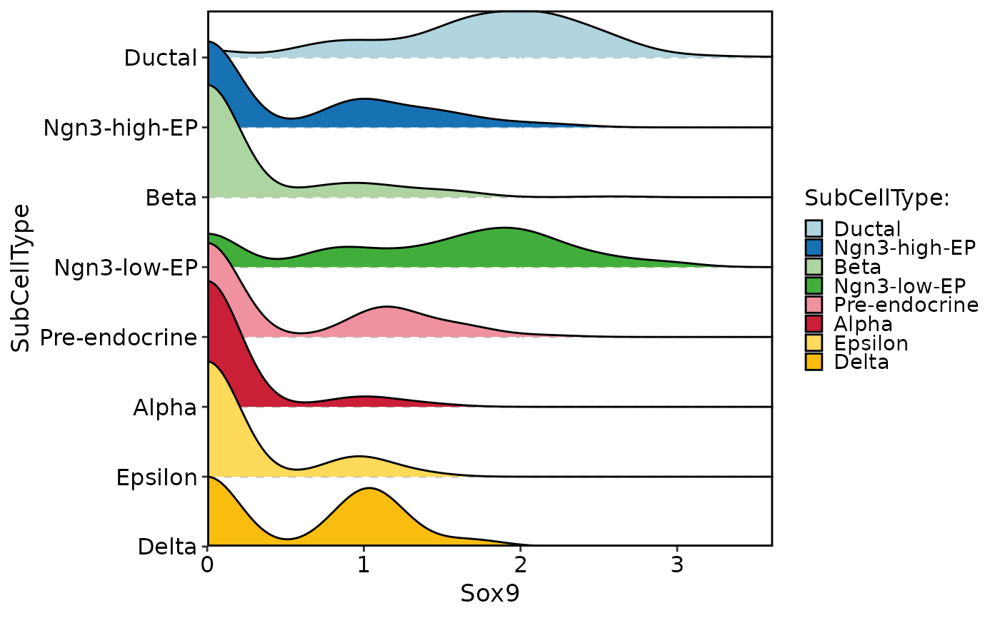
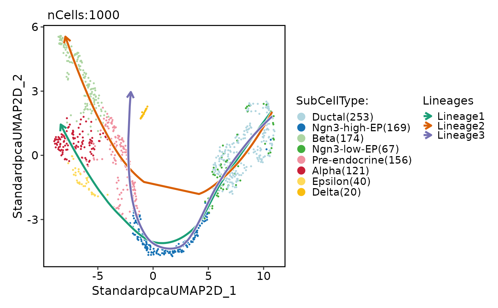
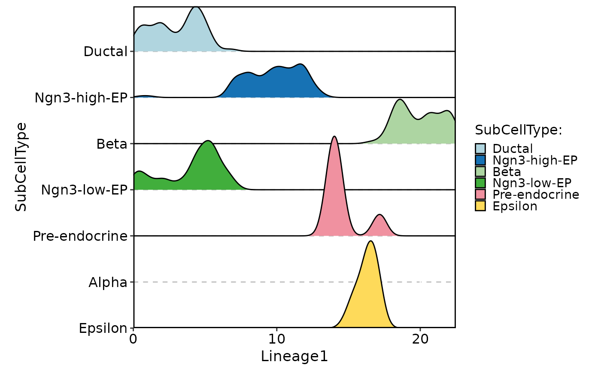

Plots the density of specified features in a single or multiple groups, grouped by specified variables.
CellDensityPlot(
srt,
features,
group.by = NULL,
split.by = NULL,
assay = NULL,
slot = "data",
flip = FALSE,
reverse = FALSE,
x_order = c("value", "rank"),
decreasing = NULL,
palette = "Paired",
palcolor = NULL,
cells = NULL,
keep_empty = FALSE,
y.nbreaks = 4,
y.min = NULL,
y.max = NULL,
same.y.lims = FALSE,
aspect.ratio = NULL,
title = NULL,
subtitle = NULL,
legend.position = "right",
legend.direction = "vertical",
theme_use = "theme_scop",
theme_args = list(),
combine = TRUE,
nrow = NULL,
ncol = NULL,
byrow = TRUE,
force = FALSE
)A Seurat object.
A character vector specifying the features to plot.
A character vector specifying the variables to group the data by.
A character vector specifying the variables to split the data by. Default is NULL, which means no splitting is performed.
A character specifying the assay to use from the Seurat object. Default is NULL, which means the default assay will be used.
A character specifying the slot to use from the assay. Default is "data".
A logical indicating whether to flip the x-axis. Default is FALSE.
A logical indicating whether to reverse the y-axis. Default is FALSE.
A character specifying how to order the x-axis. Can be "value" or "rank". Default is "value".
A logical indicating whether to order the groups in decreasing order. Default is NULL.
A character specifying the color palette to use for grouping variables. Default is "Paired".
A character specifying the color to use for each group. Default is NULL.
A character vector specifying the cells to plot. Default is NULL, which means all cells are included.
A logical indicating whether to keep empty groups. Default is FALSE.
An integer specifying the number of breaks on the y-axis. Default is 4.
A numeric specifying the minimum value on the y-axis. Default is NULL, which means the minimum value will be automatically determined.
A numeric specifying the maximum value on the y-axis. Default is NULL, which means the maximum value will be automatically determined.
A logical indicating whether to use the same y-axis limits for all plots. Default is FALSE.
A numeric specifying the aspect ratio of the plot. Default is NULL, which means the aspect ratio will be automatically determined.
A character specifying the title of the plot. Default is NULL.
A character specifying the subtitle of the plot. Default is NULL.
A character specifying the position of the legend. Default is "right".
A character specifying the direction of the legend. Default is "vertical".
A character specifying the theme to use. Default is "theme_scop".
A list of arguments to pass to the theme function.
A logical indicating whether to combine multiple plots into a single plot. Default is TRUE.
An integer specifying the number of rows in the combined plot. Default is NULL, which means determined automatically based on the number of plots.
An integer specifying the number of columns in the combined plot. Default is NULL, which means determined automatically based on the number of plots.
A logical indicating whether to add plots by row or by column in the combined plot. Default is TRUE.
A logical indicating whether to continue plotting if there are more than 50 features. Default is FALSE.
data("pancreas_sub")
CellDensityPlot(pancreas_sub, features = "Sox9", group.by = "SubCellType")
#> Picking joint bandwidth of 0.453

pancreas_sub <- RunSlingshot(pancreas_sub, group.by = "SubCellType", reduction = "UMAP")
#> Warning: No shared levels found between `names(values)` of the manual scale and the data's fill values.
#> Warning: No shared levels found between `names(values)` of the manual scale and the data's fill values.
#> Warning: Removed 8 rows containing missing values or values outside the scale range (`geom_path()`).
#> Warning: Removed 8 rows containing missing values or values outside the scale range (`geom_path()`).
CellDensityPlot(pancreas_sub, features = "Lineage1", group.by = "SubCellType", aspect.ratio = 1)
#> Picking joint bandwidth of 0.662

CellDensityPlot(pancreas_sub, features = "Lineage1", group.by = "SubCellType", flip = TRUE)
#> Picking joint bandwidth of 0.662
